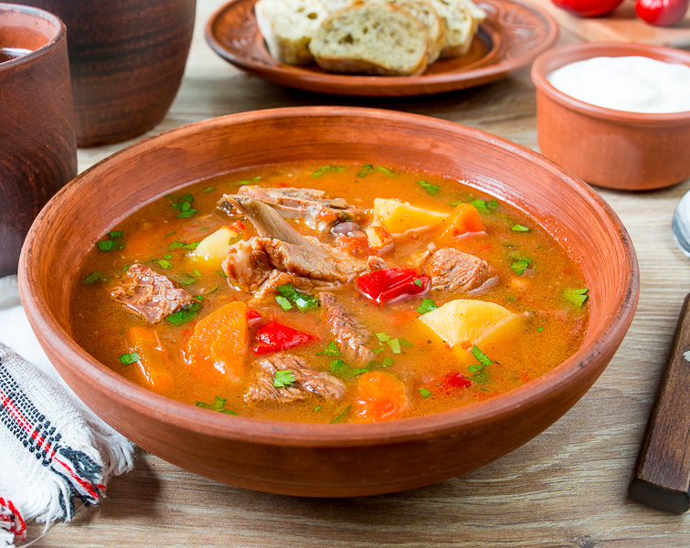

Бограч
Бограч — це улюблена страва закарпатських господинь. Він дуже
ситний, адже поєднує в собі різні види м’яса, сало, розмаїття
овочів та копчену паприку.
-
Яловичина, свинина, картопля, сало, томати, солодкий перець,
зелена цибуля, спеції
- Порція: 400г
- Ціна: 180грн